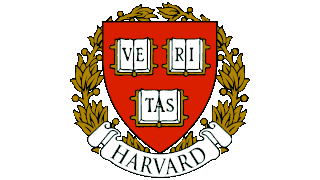

|  | Home Quem somos Contato |
Sobre a universidadeUniversidade Harvard é uma universidade privada situada na cidade de Cambridge, estado de Massachusetts, nos Estados Unidos. É um membro da Ivy League. Sua história, influência e riqueza tornam-na uma das mais prestigiadas universidades do mundo. 5 motivos para estudar
Oito presidentes dos Estados Unidos formaram-se nessa universidade e cerca de 150 ganhadores do Prêmios Nobel foram filiados como estudantes, professores ou funcionários da instituição. Harvard também é a alma mater de sessenta e dois bilionários que vivem, em sua maioria, nos Estados Unidos. A Biblioteca da Universidade de Harvard é também a maior biblioteca acadêmica dos Estados Unidos e uma das maiores do mundo. O Harvard Crimson compete em 42 esportes intercolegiais na primeira divisão da National Collegiate Athletic Association da Ivy League. Harvard tem o maior orçamento do que o de qualquer outra instituição acadêmica do mundo, situando-se em cerca de 30 bilhões de dólares em setembro de 2012. |
|